Голоса берутся из твоего телефона или компьютера, поэтому список у всех свой. Нажми на голос, чтобы выбрать и послушать.
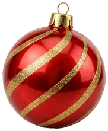
Всё английское можно послушать. Жми на фразы со значком 🔈. Голос, акцент и скорость выбираешь сам.
Ставишь знак вопроса и надеешься на интонацию.
Does he works? Did you went? Знакомо.
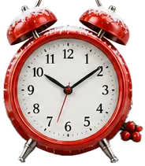
Who called you или who did you call. Каждый раз лотерея.
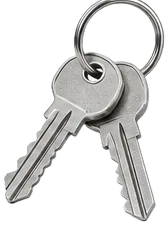
To whom you are talking? Звучит как зал суда.
…isn't it, …aren't you, …shall we. Киваешь и улыбаешься.
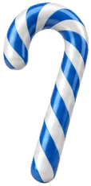
Типов пять. Секрет у четырёх один и тот же. Пятый ломает правило. Жми на карточку, чтобы прыгнуть к разбору.
В русском вопрос делают голосом. Ты пришёл. Ты пришёл? Слова те же.
В английском так не выйдет. You are ready? Это не вопрос. Это утверждение, к которому приделали крючок.
Тут один глагол прыгает вперёд подлежащего. Технически это всё.
Как пользоваться машиной ниже: выбери фразу и жми «Сделать вопрос». Смотри, кто прыгает, а кто приходит на помощь.
Помощник берёт всю работу. Глагол несёт только смысл.
Ответ да или нет. Начинается с глагола. В конце голос идёт вверх.
Голое yes звучит сухо. Отвечай тем же глаголом, что был в вопросе. Нажми на карточку.
Yes, I'm нельзя. В положительном коротком ответе не сокращаем. Только Yes, I am.
В отрицательном сокращать можно и нужно: No, I'm not. No, she doesn't.
Do you are a student? To be прыгает сам. Помощник ему не нужен: Are you a student?
Берёшь готовый общий вопрос. Ставишь вперёд вопросительное слово. Внутри ничего не трогаешь. И голос в конце идёт вниз ↘, как в обычной фразе.
Выбери слово. Оно прилетит в начало, остальное останется на месте.
What do you want to drink?
Which do you want, tea or coffee?
Русский ставит предлог вперёд: с кем, о чём. Английский в живой речи увозит его в конец.
| По-русски | Как говорят |
|---|---|
| Откуда ты? | Where are you from? |
| О чём это? | What is it about? |
| На что ты смотришь? | What are you looking at? |
| Кого ты ждёшь? | Who are you waiting for? |
Предлагает выбор через or. Строится как общий, просто в конце добавляешь вариант. Голос: на первом вверх, на втором вниз.
Единственный тип, где перестановки нет. Спрашиваешь, кто сделал, и порядок слов остаётся прямым. Do, does, did не появляются.
Анна позвонила Тому. Нажми на того, про кого хочешь спросить.
Проверка в одну секунду. Смотри, что стоит сразу после who. Глагол? Вопрос к подлежащему, помощника нет. Подлежащее (you, he, Anna)? Нужен помощник.
Who live here? Нет. Who считается за «он». Поэтому Who lives here? What happens next? Даже если ответом будет толпа.
Хвост в конце, который переспрашивает. По-русски это «не так ли?» или «правда же?». Правило зеркальное: плюс получает минус, минус получает плюс.
+ → − или − → +
Формы amn't I нет. Язык просто подставил aren't. Не ищи логику, это ключи, которые надо держать в кармане.
Голос меняет смысл. Хвост вверх: правда спрашиваешь. Хвост вниз: ты уже знаешь ответ и ждёшь «да».
Русский отвечает на форму вопроса. Английский отвечает на факт. Действие есть: yes. Действия нет: no.
Разве ты не любишь кофе?
Ошибка людей с хорошим английским. Когда вопрос становится частью фразы, перестановка пропадает. Она уже сделана в начале.
| Прямо | Вежливо |
|---|---|
| Where is the station? | Could you tell me where the station is? |
| What time is it? | Do you know what time it is? |
| Is she coming? | I wonder if she is coming. |
Один вопрос. Одна перестановка.
Все пять типов ещё раз, с интонацией и живыми примерами. Включай после гайда, чтобы правила легли на слух.
Собери вопрос из слов. В каждом задании есть одно лишнее слово-ловушка.
Девять вопросов. После каждого объясню, почему так.
Этот гайд ты прошёл минут за десять. Он не отдельный. Это одна тема из Dias English: готовой системы английского в Notion от A0 до C1.
Страница про вопросы лежит в уровне A0. Сразу после неё идёт следующая тема. И так до C1.
У каждого способа есть плюс. И у каждого есть место, где он ломается.
Так я и собрал Dias English.
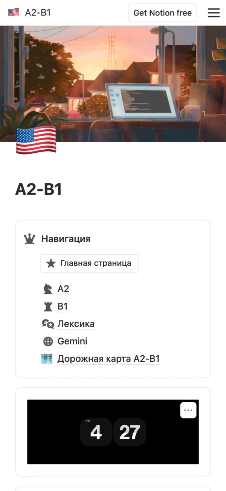
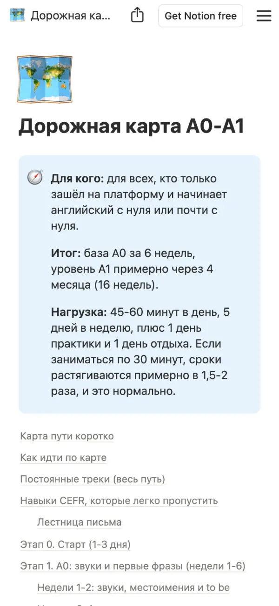
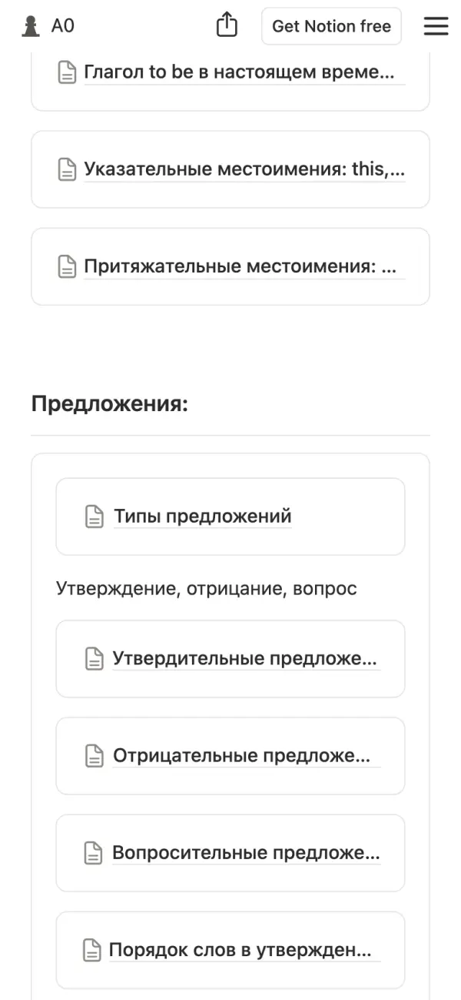
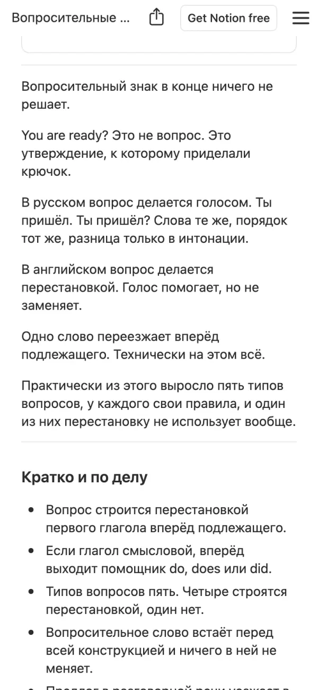
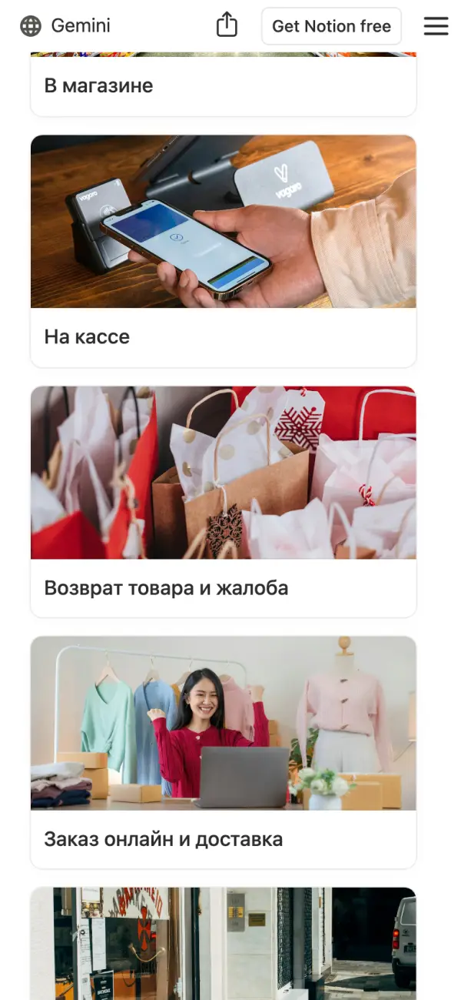
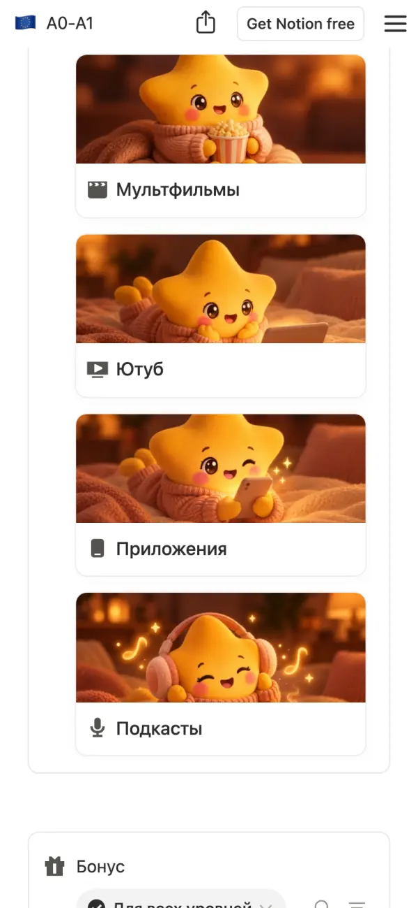
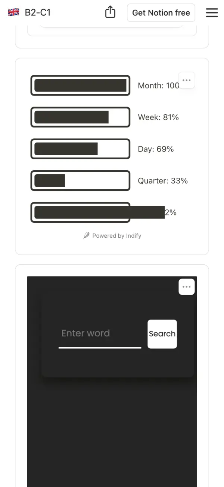
Дорожная картаПлан по неделям и контрольные точки с тестами
ГрамматикаКаждая тема: объяснение, видео, упражнения, ответы
Лексика и ситуацииСлова по темам и диалоги для реальной жизни
Подборка ресурсовМультфильмы, YouTube, подкасты и приложения по уровню
ТрекерыПривычки, прогресс и календарь прямо в Notion
Reading, Listening, Speaking, WritingОтдельные разделы на уровнях A2–B1 и B2–C1
Теперь ты знаешь, как их правильно задавать.
Да. Начинаешь с A0–A1: алфавит, звуки, to be, первые фразы. Дорожная карта ведёт по неделям и говорит, что делать каждый день.
Карта рассчитана на 45–60 минут в день. Если получается по 30, сроки растянутся в полтора-два раза. Это нормально, отстать от группы тут нельзя.
Приложение даёт кусочки. Здесь порядок: тема, видео, упражнение, ответы с разбором, а потом ситуация, где это пригодится.
Ничего настраивать не надо. Открываешь страницу и идёшь по навигации, как по сайту. Работает на телефоне.
Уровни и цены на странице оплаты. Жми кнопку ниже. Если что-то непонятно, напиши в WhatsApp, отвечу сам.
Одна система вместо сорока вкладок. Открыл Notion и знаешь, что делать сегодня.